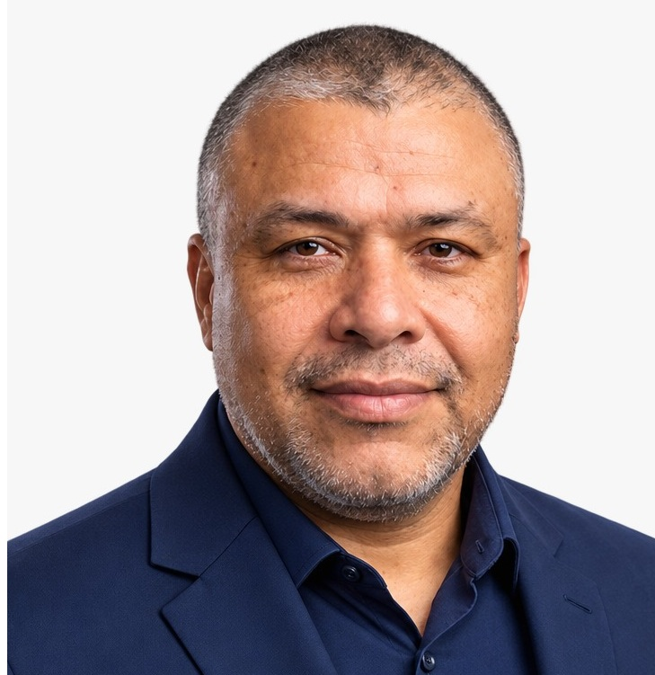

Soluções técnicas para mineração, siderurgia e indústria. Especialista com 24 anos em Vale e ArcelorMittal.

Calibração, laudo técnico, conformidade metrológica e auditoria. Estáticas, Dinâmicas e Analíticas.
Rockwell, Siemens, WEG. Upgrade, modernização e manutenção preventiva.
Desenvolvimento e otimização de supervisórios, alarmes e relatórios.
Modbus, Profibus-PA, Ethernet/IP. Configuração e troubleshooting.
Testes, comissionamento seguro e partida de sistemas industriais.
Experiência de 11 anos na ArcelorMittal gerenciando contratos críticos.
✓ Diagnóstico Inicial
✓ Suporte Remoto Mensal
✓ Relatório Técnico
✓ Tudo do Bronze
✓ Programação/Retrofit de CLPs
✓ Suporte Prioritário
✓ Visitas Técnicas Mensais
✓ Tudo do Prata
✓ Comissionamento & Start-up
✓ Gestão Completa de Calibração
✓ Suporte 24/7 + On-site
24 anos em campo, não em teoria. 10 anos na Vale (Porto de Tubarão) e 11 anos na ArcelorMittal (Balanças). Já vi o que funciona e o que para uma usina. Meu diferencial: foco em segurança, redução de paradas não programadas e inteligência emocional para lidar com equipes difíceis.